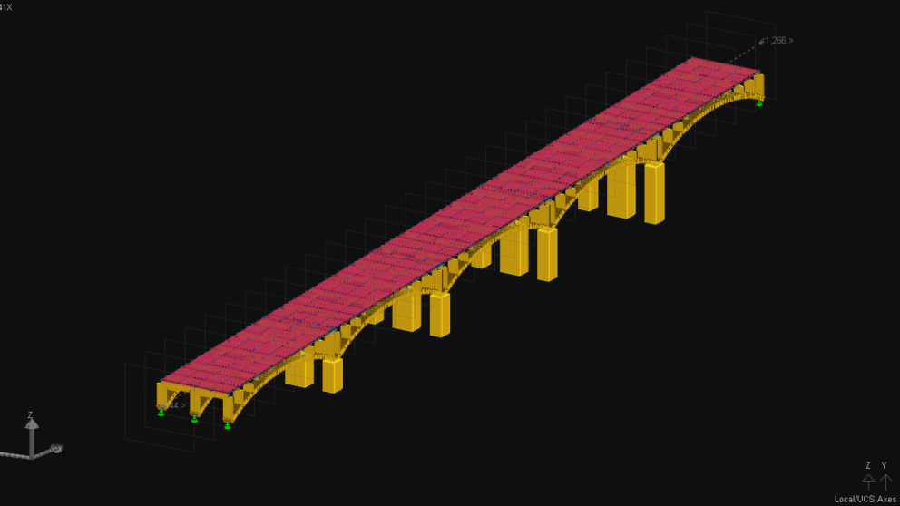
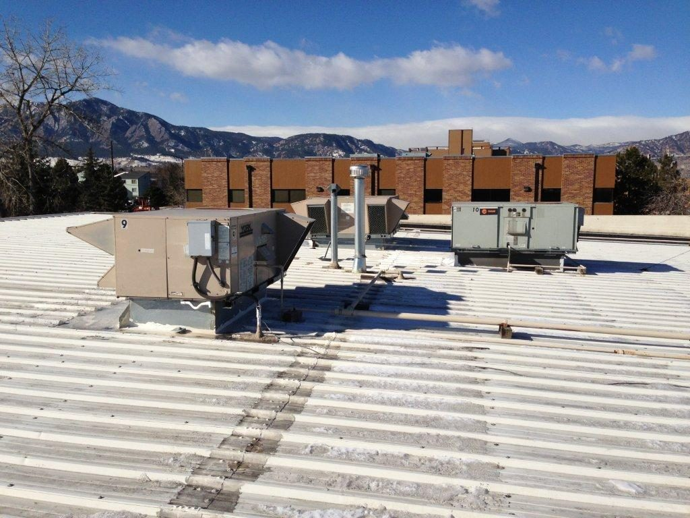

VDOT On-Call Bridge Rehabilitation
On-call bridge rehabilitation engineering services for VDOT — bearing replacement, joint replacement, deck rehabilitation, steel section repair, bridge jacking and blocking plans, and construction support across multiple Virginia districts.

VDOT Bridge Load Rating
LRFR and LFR load rating analyses for multiple VDOT bridges per AASHTO Manual for Bridge Evaluation. Scope includes prestressed concrete girder bridges, steel plate girder bridges, and reinforced concrete structures — with full load rating reports and documentation using AASHTO BrR software.

JFK / EWR / LaGuardia — Airport Terminal & Parking Structure Inspection
Team leader for structural inspections at John F. Kennedy, Newark Liberty, and LaGuardia airports — terminal buildings, parking garages, hangars, high mast light towers, and port facility structures for the Port Authority of NY & NJ.

NYC MTA-LIRR — New Grand Central Terminal Station
Lead structural engineer for the 90% design submission of a new 3-level LIRR station in a 1,200 ft underground cavern beneath Midtown Manhattan. Part of the East Side Access project (Contract CM012), one of the largest transit infrastructure projects in U.S. history.
Commercial Building Structural Evaluation & Inspection
Structural evaluation and inspection of commercial building systems — including framing assessments, condition surveys, code compliance reviews, and engineering reports with recommended repair or remediation solutions for building owners and facility managers.

Rooftop RTU Structural Engineering — Evaluation & Design
Structural evaluation and design solutions for rooftop mechanical equipment support — including RTU (rooftop unit) framing, steel dunnage design, existing roof framing capacity checks, and construction documents per ASCE-7, AISC, and IBC standards.